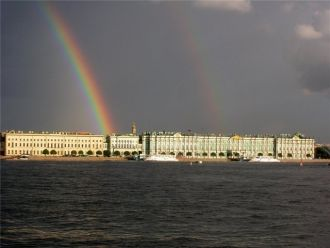

Hiç güvenme gençliğine, güzelliğineSana zaman tutan kader İyiliğineKaybedersin sonunda kibrine düşüp,Sadece senin sandığın özelliğine...

Где ж ты, мой свет, бродишь, голову склоня?Дай же ответ, что не позабыл меня.Ведь писем нет вот уже четыре дня,Милый, не греши, напиши!
Я проснулась сегодня с утра.Меня разбудил шум дождя из окна.Танцевала всю ночь я самаДо утра!Нет силы.Я просила,
I can't wait,For the weekend to begin,(I, I, I, I, I)
I got on the phone and calledthe girls, saidMeet me down at Curly Pearls,for aNey, Nah Neh NahIn my high-heeled shoes and fancy fads
Mira lo que se avecinaa la vuelta de la esquina,viene Diego rumbeando.Con la luna en las pupilasy en su traje agua marina
Dee Dee na na naSaturday night, I feel the airIs getting hotLike you baby
Pretty pretty, prettiest girlPretty pretty, prettiest girl…
ソワソワしながら現れた君は yea「あの子は誰なの？」って oh noみんなが話してた噂のGirl
Πριν σε γνωρίσω ήμουν o Stan και ο Ρουβας μαζίΜα εσύ μ εκανες μιγμα καρρά τερζηΞερίζωσες απ’την καρδιά μου όλη τη χαρά
Они знают ответ на вопрос что и как? И у них точно есть отличительный знак.Но не спрятаться в нём, не закрыться в себе.
Далеко-далёко берег твой высокий,Да не ближе берег мойНе достать рукою, но весь мир накрою
Этой радио-волной. Лови и помни!
Встречай новый день без меня.Встречай новый день без меня.
Развяжи мне руки,Обними за плечи,Отпусти на волю,И забудь меня.
[Intro]Excuse me, can I please talk to you for a minute?
Rollerskates, them linesHot sun and clear blue skiesThe waves are crashing byAnd when she passed me byAnd gave a wink and smile
Чтобы кружилась голова, словаИ обнимают, как глаза, глазаИ если хочешь, не молчи в ночиКричи, кричиРазочарованный во мгле беглец
Canım Sevmek Suçsa Seviyorum SeniAffet Beni, Affet Beni YanaklarımdanSüzülürken Aşk Öpme istersen, Öpme istersen
Oh the weather outside is frightful, But the fire is so delightful,And since we've no place to go,Let It Snow! Let It Snow! Let It Snow!
Ночь - зона риска, сказки для близкихКаплющий дождь обжигающим вискиМокрые волосы, губы так близкоБрызги неона снова и снова
Больше нечего ловитьВсё, что надо, я поймал,Надо сразу уходить,Чтоб никто не привыкал.
When I get chills at nightI feel it deep inside without you, yeahKnow how to satisfyKeeping that tempo right without you, yeah